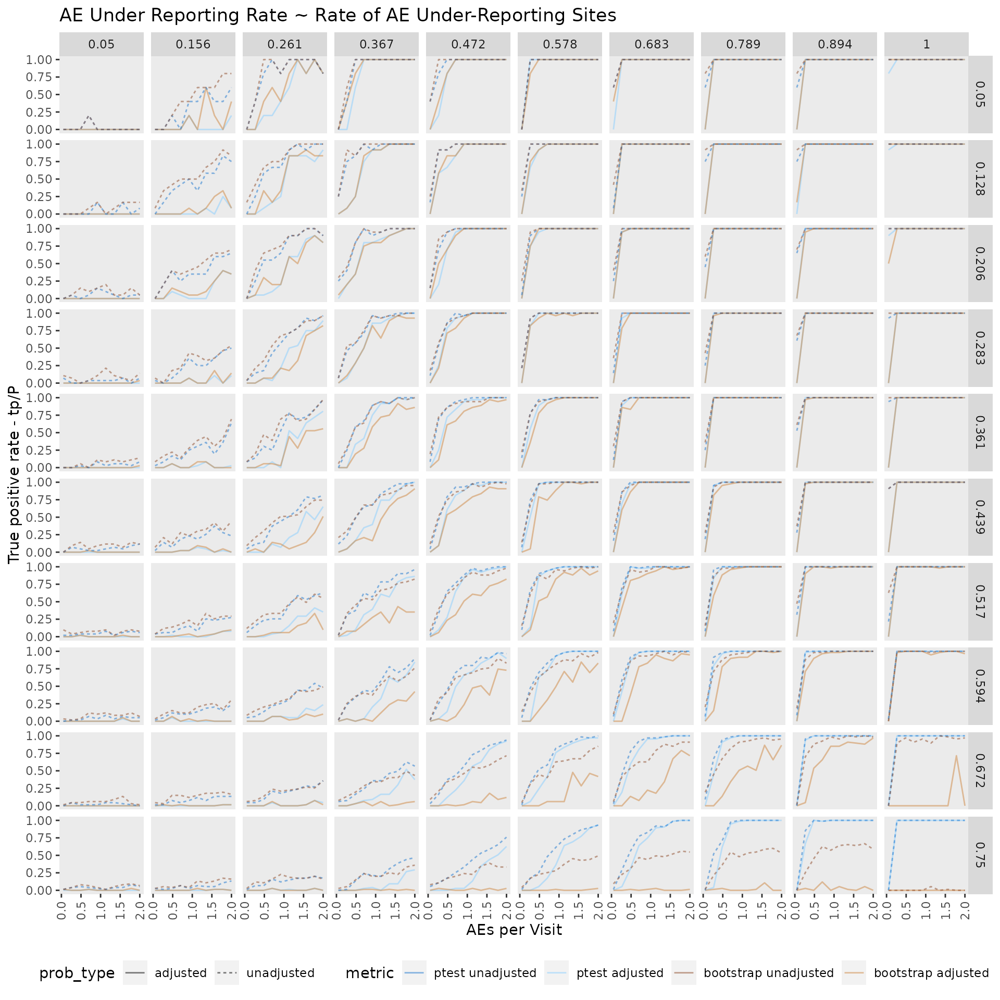
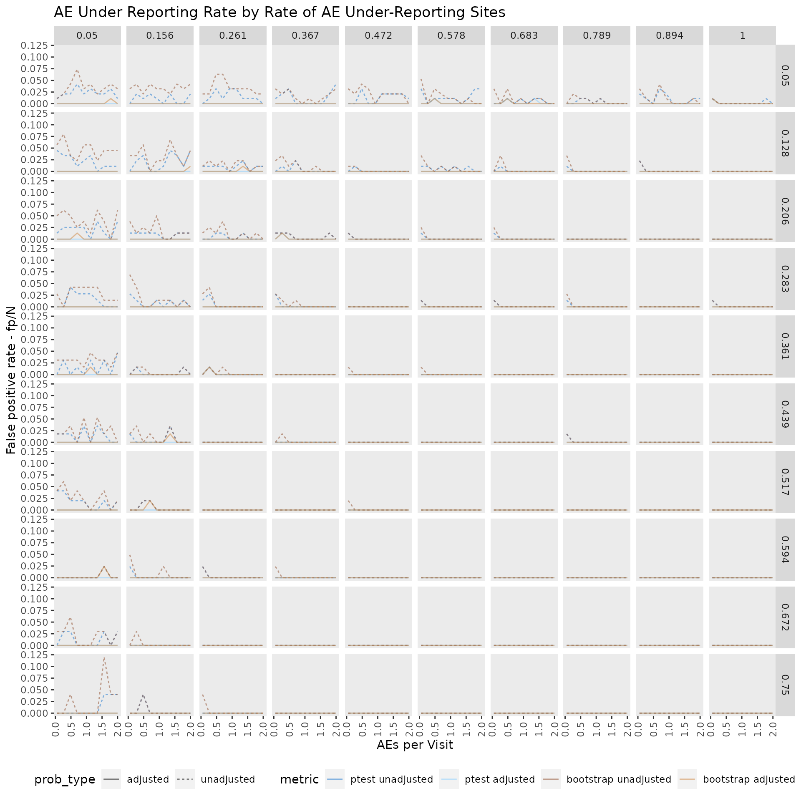

usability_limits.RmdsuppressPackageStartupMessages( library(tidyverse) ) suppressPackageStartupMessages( library(knitr) ) suppressPackageStartupMessages( library(furrr) ) suppressPackageStartupMessages( library(future) ) suppressPackageStartupMessages( library(simaerep) )
There limits to the use of the bootstrapping method to detect rare events. - the higher the fraction of AE under-reporting sites the less likely it should become to flag under-reporting sites - negative deviations from overall small integer values (3 or less) will also be hard to detect
Here we are going to test the bootstrapped-based under-reporting detection method against the poisson.test-based benchmark in different AE under-reporting scenarios.
Fixed Parameters:
- n_pat: 1000
- n_sites: 100
- max_visit_mean: 20
- max_visit_sd: 4
Variable Parameters:
- ae_visit: 0.05 - 2
- frac_sites_wit_ur: 0.05 - 0.75
- ur_rate: 0.05 - 1
set.seed(1) df_grid <- tibble( ae_per_visit_mean = seq(0.05, 2, length.out = 10)) %>% mutate(frac_site_with_ur = list(seq(0.05, 0.75, length.out = 10))) %>% unnest(frac_site_with_ur) %>% mutate(ur_rate = list(seq(0.05, 1, length.out = 10)) ) %>% unnest(ur_rate) df_grid
## # A tibble: 1,000 x 3
## ae_per_visit_mean frac_site_with_ur ur_rate
## <dbl> <dbl> <dbl>
## 1 0.05 0.05 0.05
## 2 0.05 0.05 0.156
## 3 0.05 0.05 0.261
## 4 0.05 0.05 0.367
## 5 0.05 0.05 0.472
## 6 0.05 0.05 0.578
## 7 0.05 0.05 0.683
## 8 0.05 0.05 0.789
## 9 0.05 0.05 0.894
## 10 0.05 0.05 1
## # … with 990 more rowssuppressWarnings(future::plan(multiprocess))
df_grid <- df_grid %>% mutate( df_visit = furrr::future_pmap(list(am = ae_per_visit_mean, fr = frac_site_with_ur, ur = ur_rate), function(am, fr, ur) sim_test_data_study(n_pat = 1000, n_sites = 100, max_visit_mean = 20, max_visit_sd = 4, ae_per_visit_mean = am, frac_site_with_ur = fr, ur_rate = ur), .progress = FALSE ) )
df_grid <- df_grid %>% mutate( df_visit = map2(df_visit, row_number(), function(x,y) mutate(x, study_id = paste("S", y))), df_site = furrr::future_map(df_visit, site_aggr, .progress = FALSE ) )
Simulate how likely a given mean ae count or lower is for each site is by randomly sampling with replacement of new patients from the study patient pool.
df_grid <- df_grid %>% mutate( df_sim_sites = furrr::future_map2(df_site, df_visit, sim_sites, r = 1000, poisson_test = TRUE, prob_lower = TRUE, .progress = FALSE ) )
We balance the simulated under reporting probabilites with the expected FP rates and calculate the P vs FP ratio and the resulting adjusted AE under-reporting probability.
df_grid <- df_grid %>% mutate( df_eval = furrr::future_map(df_sim_sites, eval_sites, r_sim_sites = 1000, .progress = FALSE ) )
We choose a 95% threshold for detecting AE under-reporting sites and will calculate standard classification metrics.
get_metrics <- function(df_visit, df_eval, method) { if (method == "ptest") { prob_ur_adj = "pval_prob_ur" prob_ur_unadj = "pval" } else { prob_ur_adj = "prob_low_prob_ur" prob_ur_unadj = "prob_low" } df_ur <- df_visit %>% select(site_number, is_ur) %>% distinct() df_metric_prep <- df_eval %>% left_join(df_ur, "site_number") %>% rename( prob_ur_adj = !! as.name(prob_ur_adj), prob_ur_unadj = !! as.name(prob_ur_unadj) ) df_metric_adjusted <- df_metric_prep %>% select(study_id, site_number, is_ur, prob_ur_adj) %>% mutate( tp = ifelse(is_ur & prob_ur_adj >= 0.95, 1, 0), fn = ifelse(is_ur & prob_ur_adj < 0.95, 1, 0), tn = ifelse((! is_ur) & prob_ur_adj < 0.95, 1, 0), fp = ifelse((! is_ur) & prob_ur_adj >= 0.95, 1, 0), p = ifelse(prob_ur_adj >= 0.95, 1, 0), n = ifelse(prob_ur_adj < 0.95, 1, 0), P = ifelse(is_ur, 1, 0), N = ifelse(! is_ur, 1, 0) ) %>% group_by(study_id) %>% select(-site_number, - is_ur, - prob_ur_adj) %>% summarize_all(sum) %>% mutate(prob_type = "adjusted") df_metric_unadjusted <- df_metric_prep %>% select(study_id, site_number, is_ur, prob_ur_unadj) %>% mutate( tp = ifelse(is_ur & prob_ur_unadj <= 0.05, 1, 0), fn = ifelse(is_ur & prob_ur_unadj > 0.05, 1, 0), tn = ifelse((! is_ur) & prob_ur_unadj > 0.05, 1, 0), fp = ifelse((! is_ur) & prob_ur_unadj <= 0.05, 1, 0), p = ifelse(prob_ur_unadj <= 0.05, 1, 0), n = ifelse(prob_ur_unadj > 0.05, 1, 0), P = ifelse(is_ur, 1, 0), N = ifelse(! is_ur, 1, 0) ) %>% group_by(study_id) %>% select(-site_number, - is_ur, - prob_ur_unadj) %>% summarize_all(sum) %>% mutate(prob_type = "unadjusted") df_metric <- bind_rows(df_metric_adjusted, df_metric_unadjusted) %>% mutate(method = method) } df_grid <- df_grid %>% mutate(df_metric_pval = furrr::future_map2(df_visit, df_eval, get_metrics, method = "ptest"), df_metric_prob_low = furrr::future_map2(df_visit, df_eval, get_metrics, method = "bootstrap"), df_metric = map2(df_metric_pval, df_metric_prob_low, bind_rows) )
df_plot <- df_grid %>% select(ae_per_visit_mean, frac_site_with_ur, ur_rate, df_metric) %>% unnest(df_metric)
p <- df_plot %>% mutate( tp_P_ratio = tp/P) %>% select(ae_per_visit_mean, frac_site_with_ur, ur_rate, tp_P_ratio, method, prob_type) %>% mutate_if(is.numeric, round, 3) %>% mutate(metric = case_when(method == "ptest" & prob_type == "unadjusted" ~ "ptest unadjusted", method == "ptest" & prob_type == "adjusted" ~ "ptest adjusted", method == "bootstrap" & prob_type == "unadjusted" ~ "bootstrap unadjusted", method == "bootstrap" & prob_type == "adjusted" ~ "bootstrap adjusted"), metric = fct_relevel(metric, c("ptest unadjusted", "ptest adjusted", "bootstrap unadjusted", "bootstrap adjusted"))) %>% ggplot(aes(ae_per_visit_mean, tp_P_ratio, color = metric)) + geom_line(aes(linetype = prob_type), size = 0.5, alpha = 0.5) + facet_grid( frac_site_with_ur ~ ur_rate) + scale_color_manual(values = c("dodgerblue3", "skyblue1", "sienna4", "peru")) + theme(panel.grid = element_blank(), legend.position = "right") + labs(title = "AE Under Reporting Rate ~ Rate of AE Under-Reporting Sites", y = "True positive rate - tp/P", x = "AEs per Visit") p

p <- df_plot %>% mutate( fpr = fp/N) %>% select(ae_per_visit_mean, frac_site_with_ur, ur_rate, fpr, method, prob_type) %>% mutate_if(is.numeric, round, 3) %>% mutate(metric = case_when(method == "ptest" & prob_type == "unadjusted" ~ "ptest unadjusted", method == "ptest" & prob_type == "adjusted" ~ "ptest adjusted", method == "bootstrap" & prob_type == "unadjusted" ~ "bootstrap unadjusted", method == "bootstrap" & prob_type == "adjusted" ~ "bootstrap adjusted"), metric = fct_relevel(metric, c("ptest unadjusted", "ptest adjusted", "bootstrap unadjusted", "bootstrap adjusted"))) %>% ggplot(aes(ae_per_visit_mean, fpr, color = metric, linetype = prob_type)) + geom_line(size = 0.5, alpha = 0.5) + facet_grid( frac_site_with_ur ~ ur_rate) + scale_color_manual(values = c("dodgerblue3", "skyblue1", "sienna4", "peru")) + theme(panel.grid = element_blank(), legend.position = "right") + labs(title = "AE Under Reporting Rate by Rate of AE Under-Reporting Sites", y = "False positive rate - fp/N", x = "AEs per Visit") p

We can show that adjusting the AE under-reporting probability for the expected number of false positives is quite effective.As the false positive rate is almost zero for all tested scenarios. However, this also comes at a cost lowering the true positive rate as well.
When comparing bootstrap method against the poisson.test becnhmark test, we find that they perform mostly similar from a 0.05 - 0.3 ratio of under-reporting sites. Its performance is still acceptable from a 0.3 - 0.5 ratio and then becomes pretty useless.
As expected detection of under-reporting sites is close too impossible when the ae/visit ratio is very low (0.05) with detection rates close to zero for all tested scenarios.